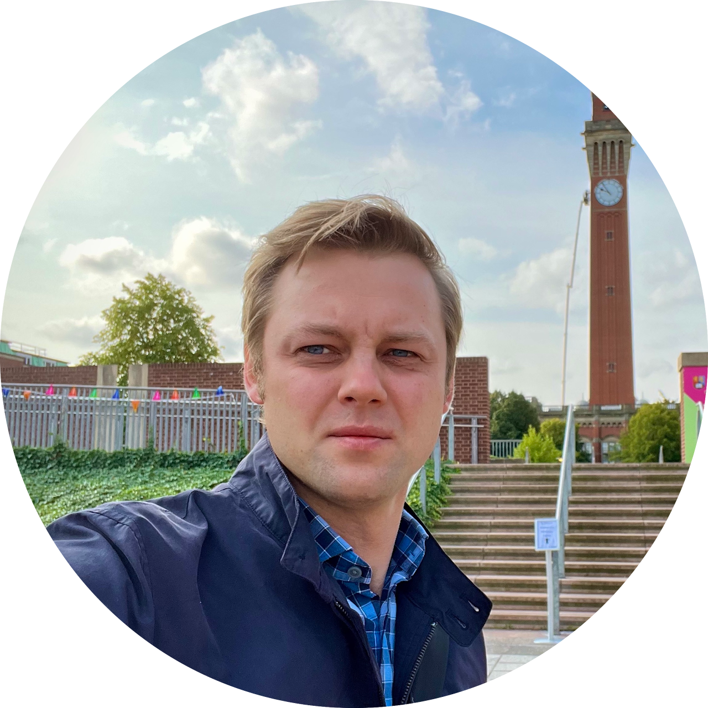
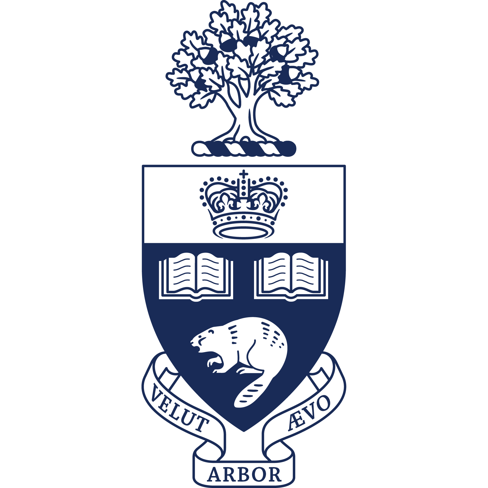
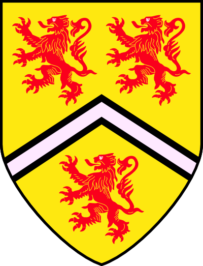
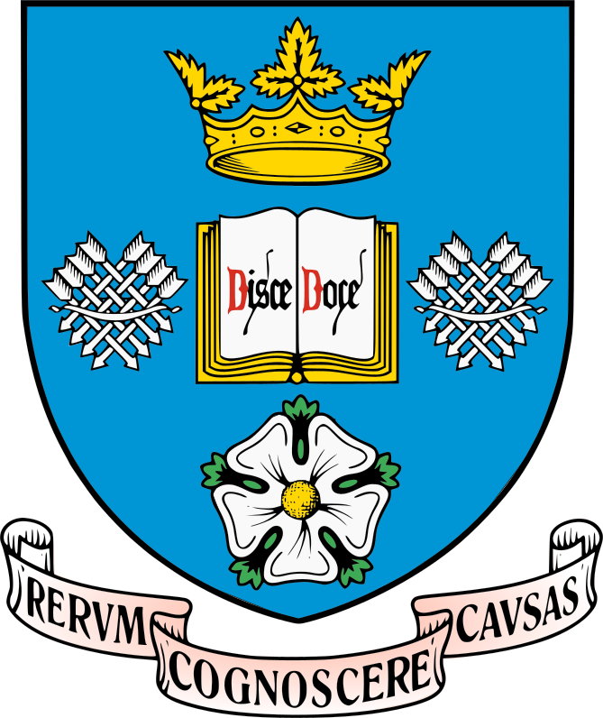
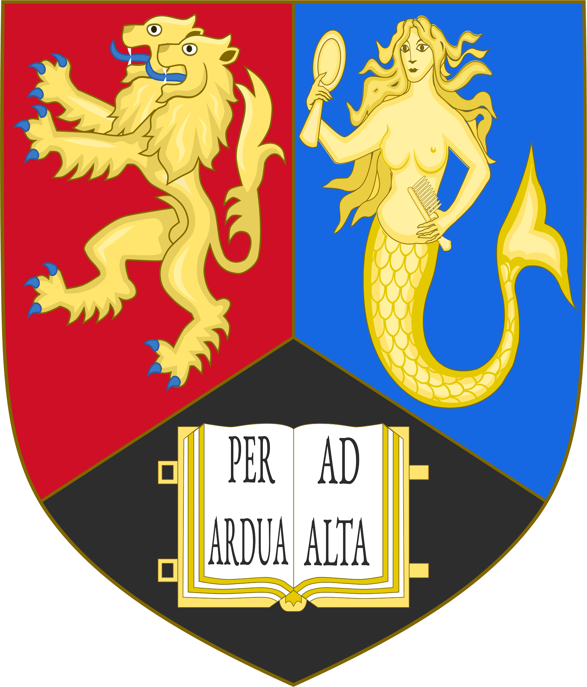
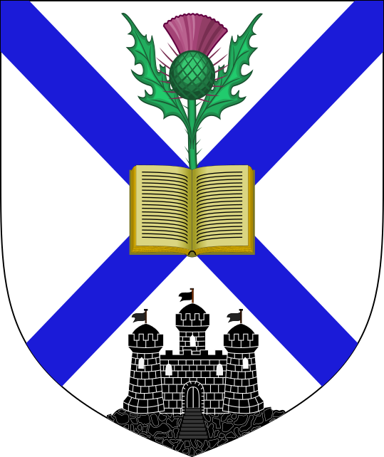

Nikita Nikolaev
Research Associate
01 |Brief profile
I am a mathematician, working as a Research Associate in the School of Mathematics at the University of Edinburgh, where I work with Alexander Shapiro.
I got my undergraduate degree in Mathematics and Physics from the University of Toronto in Canada, where my unofficial senior-year mentor was Sergey Arkhipov. I then went to the University of Waterloo in Canada to get a master's degree in Pure Mathematics under the supervision of Ruxandra Moraru. My thesis title was Reduction Theory and Dirac Geometry.
I got my PhD in Mathematics from the University of Toronto in 2018 under the supervision of Marco Gualtieri. My PhD thesis title was Abelianisation of Logarithmic Connections. I am a second-generation mathematical descendant of Nigel Hitchin.
I then held a 3-year postdoc position at the University of Geneva in Switzerland with Anton Alekseev. In March 2021, I joined the University of Sheffield in the UK as a postdoc with Tom Bridgeland. In September 2022, I joined the University of Birmingham as a Marie Skłodowska-Curie Fellow, hosted and mentored by Marta Mazzocco. In 2026, I joined the University of Edinburgh as a Research Associate, working with Alexander Shapiro.
ACADEMIC JOURNEY

TorontoBSc
WaterlooMMath TorontoPhD GenevaPostdoc
SheffieldPostdoc
BirminghamMSCA Fellow
EdinburghResearch AssociateImage credits
Toronto: source; Waterloo: Lupin, CC BY-SA 3.0; Geneva: University of Geneva logo; Sheffield: Chanpeter, CC BY-SA 4.0; Birmingham: Shadowssettle, CC BY-SA 4.0; Edinburgh: Hogweard, public domain. The Geneva wordmark is cropped to display its seal.


02 |Brief research profile
My research is broadly in geometry and mathematical physics, at the interface of algebraic and differential geometry and with strong connections to quantum field theory and string theory. I use predominantly algebraic techniques, complemented by analytic methods, to study questions that often lead to singular differential equations.
More specifically, my work revolves around moduli spaces of flat meromorphic connections and Higgs bundles, and the geometry of their associated spectral data. Closely related interests include the Stokes phenomenon, exact WKB analysis, and resurgence; the Riemann–Hilbert correspondence; quantum curves; topological recursion; wall-crossing; cluster algebras; holomorphic Poisson structures; and Lie algebroids and groupoids.